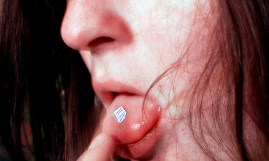

LSD (LYSERGIC ACID
DIETHYLAMIDE)
OVERVIEW:
Lysergic acid diethylamide, or LSD, is the most
potent and widely used of the category of drugs known
as hallucinogenics. Hallucinogenic drugs, also called
psychedelics, distort and confuse the senses, making
people see, hear, feel, smell, or taste things that are not
really there. The word hallucinate comes from a Latin
word meaning to wander in the mind.LSD falls into
the category of hallucinogenic drugs called indole hallucinogens.
This
means it is derived from ergot,
which is a
fungus
that grows on grains, particularly rye.
With respect to its hallucinogenic properties, LSD
affects vision most strongly, although it can distort or
enhance all the senses. The drug also produces intense,
unstable emotions. It can make people feel deeply connected
with others and with the universe, and can even
elicit
deeply spiritual experiences. In some people, LSD
promotes
a sense of deep understanding that forever
changes
their patterns of thinking or outlook (called a
mind-expanding
or consciousness-expanding experience).
On the negative side, LSD can induce panic, anxiety,
or paranoia, and can even disconnect people from
reality
to such an extent that they become a danger to
themselves
or others.
LSD is quickly absorbed throughout the body and
affects the nervous system at many sites. It is the most
powerful known hallucinogenic substance. As little as 30
to 50 micrograms (millionths of a gram) is required to
produce effects that last six to 12 hours, sometimes
longer. The effects usually start about 30 to 90 minutes
after taking the drug; a faster response time may occur at
higher doses.
CHEMICAL/ORGANIC COMPOSITION:
LSD is a semisynthetic drug. That means that it is
made up of a natural substance, called lysergic acid,
which is altered artificially in the laboratory. Lysergic
acid is present in a group of substances called ergot alkaloids
that are found in nature. These
include ergot
(Claviceps
purpurea),
a fungus that grows on rye and other
grains. It also includes certain types of morning glory
flowers, such as the heavenly blue, pearly gates, wedding
bells, flying saucers, and the Hawaiian baby woodrose.
EFFECTS

Mental Effects
LSD is very similar in its chemical composition to
serotonin, a chemical found in the brain. Serotonin is a
neurotransmitter, which means it is responsible for some of the communication that goes on between brain
cells. Serotonin is known to be responsible for behavioral,
perceptual, and regulatory systems in the brain,
including
mood, hunger,
body temperature, sex drive,
muscle
control, and sensory perception. It also helps
control
mood, thinking, and the identification of new
experiences.
It is believed that LSD works by stimulating the
effects of serotonin in the brain.
->Distortions in time and space, in which time seems
to flow more slowly and the sense of the shape or
position of the body is altered.
->Synesthesia, or the blending or crossing over of
senses, so that people might feel they can see
sounds or hear colors.
-> A feeling that everything is very real and familiar� A strong sense of connection with other people
(empathy) or connectedness to the universe.
->A sense of heightened understanding.
->Impaired judgment, which can make everyday tasks
like driving a car dangerous.
->A feeling of being rooted to the spot, even when
moving.
->Intensification of and rapid changes in mood.
-> The turning inward of attention, often with the sense
of being a passive observer of oneself.
->Uncontrolled laughing or a sense of inner tension
relieved by laughing or crying.
->Euphoria, a feeling of well-being or elation.
-> A sense of being out of the body.
Physiological Effects
LSD has such powerful mental efdo not always notice its physical efdrug is a powerful stimulant and, as such, has a dramatic
effect
on the bodyrience
with LSD, starting very soon after taking the
drug,
include:
-> dilated pupils
->changes in body temperature
-> nausea
->vomiting
-> headache
->goose bumps
->hair standing on end
-> profuse sweating
-> increased blood sugar
-> rapid heart rate
-> increased blood pressure
-> loss of appetite
-> inability to sleep
-> dry mouth
-> tremors
-> dizziness
-> numbness